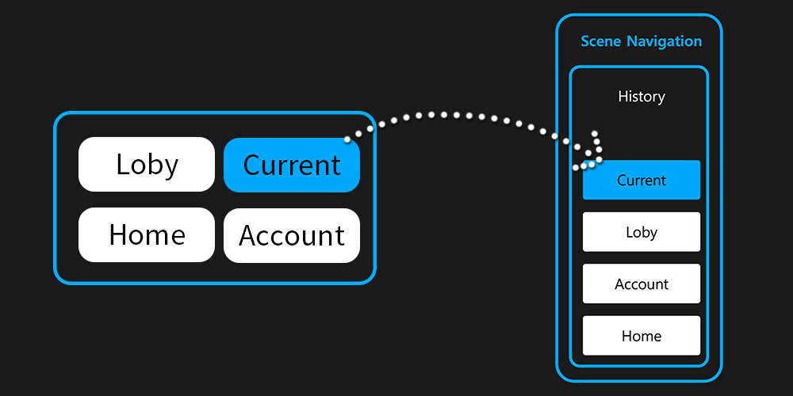

Scene Container
Unity에서 여러 씬을 사용하는 프로젝트 구조를 채택하는 경우 어떤 방식으로든 여러 씬의 전환을 구현해야 합니다.
Scene System은 이러한 복잡한 씬 전환을 수행하기 위한 함수로 SceneContainer 클래스를 제공합니다.
Push & Pop을 지원하며 스택에 쌓아서 동작합니다.
컨테이너 생성
// 컨테이너를 생성합니다.
var container = SceneContainer.Create();
SceneContainer를 사용하는 경우 먼저 SceneContainer.Create()를 사용하여 새 컨테이너를 만듭니다.
// 씬과 관련된 키를 첫 번째 인수에 전달하고 씬 이름 또는 씬 buildIndex를 두 번째 인수에 전달합니다.
container.Register("Page1", "Sample1A");
container.Register("Page1", "Sample1B");
container.Register("Page2", "Sample2");
Register 메소드를 사용하여 런타임 시 로드/언로드할 씬을 등록합니다. (로드 될때 Additive 방식으로 로드됩니다.)
// 씬 이름 또는 씬 buildIndex를 인수로 전달합니다.
container.RegisterPermanent("Permanent1");
container.RegisterPermanent("Permanent2");
RegisterPermanent 메서드를 사용하여 런타임 시 영구적으로 존재하는 장면을 등록합니다.
// 컨테이너를 빌드
var handle = container.Build();
// 완료를 기다립니다.
yield return handle.ToYieldInteraction();
마지막으로 Build 메서드를 호출합니다.
이 메서드를 호출하면 컨테이너가 활성화되는 동시에 RegisterPermanent에 등록된 씬이 Additive 방식으로 로드됩니다.
이 프로세스는 기본적으로 비동기식이며 일반적인 씬 로드와 동일한 동기 방식으로 기다릴 수 있습니다.
컨테이너를 사용한 씬 전환
// 등록된 키와 관련된 모든 씬을 로드합니다.
var handle = container.Push("Page1");
yield return handle.ToYieldInteraction();
// 이전 씬으로 돌아가기
handle = container.Pop();
yield return handle.ToYieldInteraction();
Scene Container를 사용하여 씬 전환을 수행하려면 Push 메서드를 사용하세요. (Additive 방식으로 씬을 로드합니다.)
씬이 히스토리에 누적되며, Pop() 메소드를 호출하면 이전 씬으로 돌아갈 수 있습니다.
var handle = container.ClearStack();
ClearStack 메서드를 호출하면 히스토리를 리셋하고 Push() 로 로드한 모든 씬을 언로드할 수 있습니다.
var handle = container.Release();
또한 Release()를 호출하여 컨테이너를 삭제하고, RegisterPermanent(영구 씬)으로 등록한 씬을 포함한 모든 씬을 언로드할 수도 있습니다.